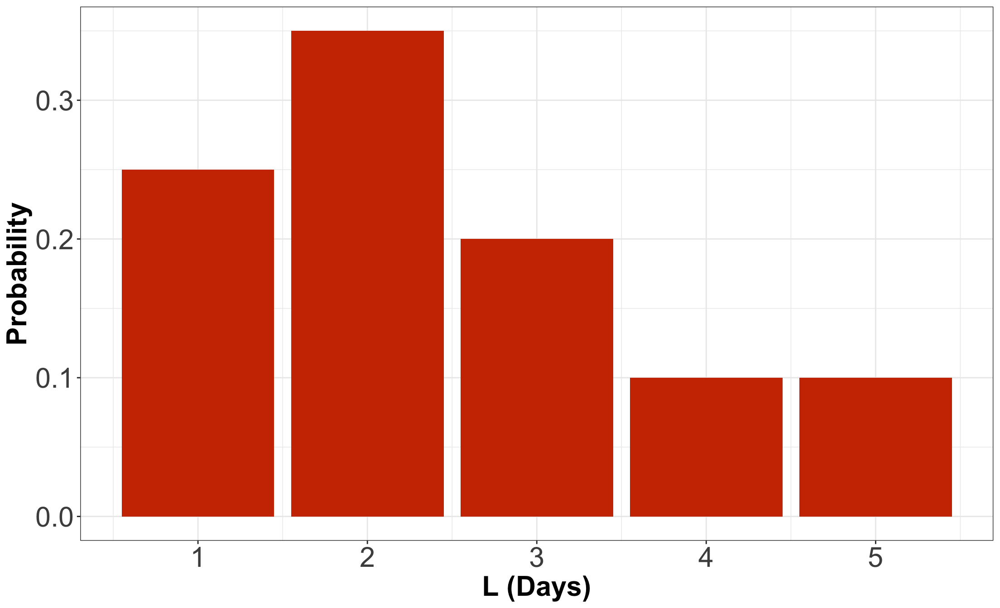
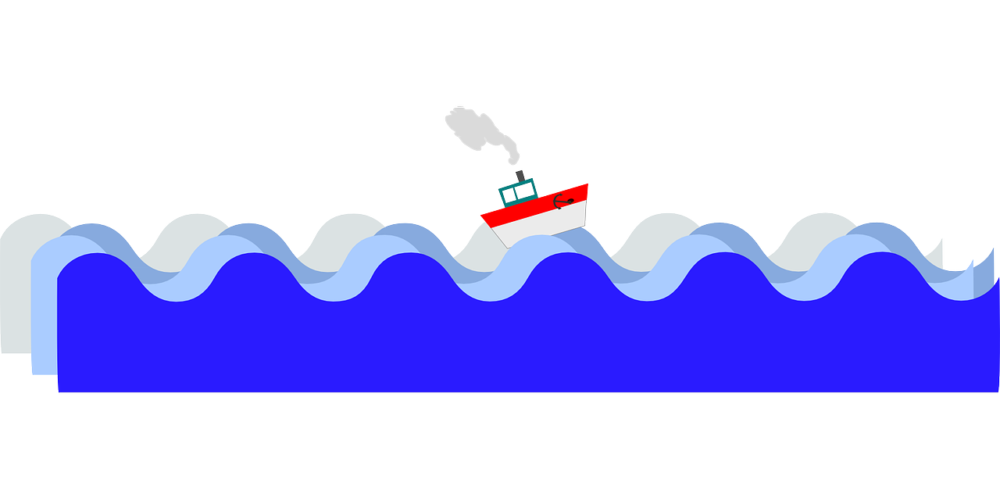
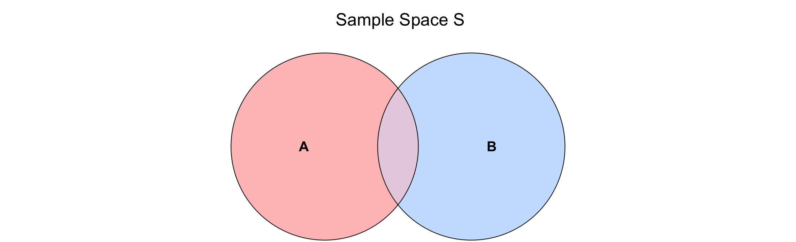
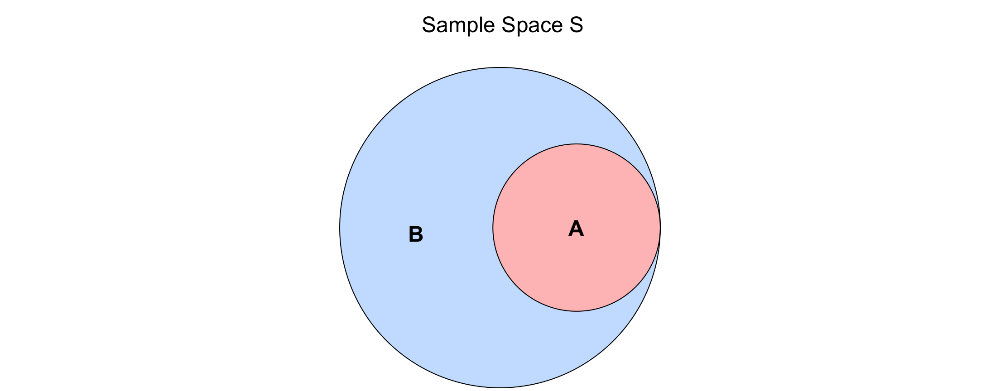
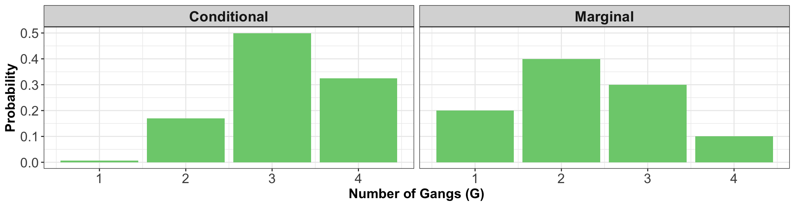
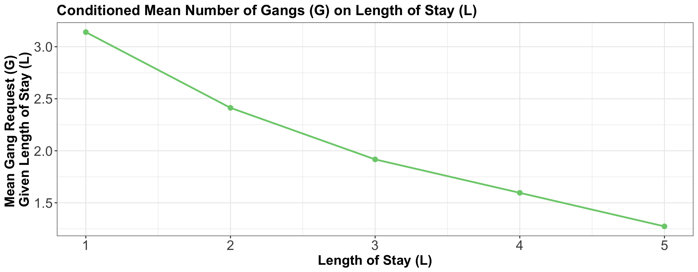
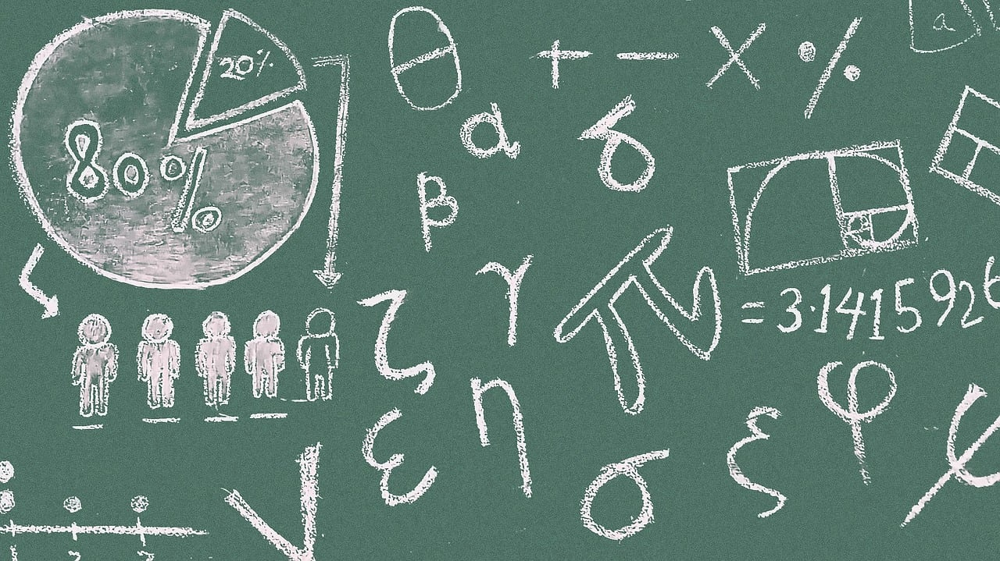

| L (Days) | Probability |
|---|---|
| 1 | 0.25 |
| 2 | 0.35 |
| 3 | 0.20 |
| 4 | 0.10 |
| 5 | 0.10 |
Conditional Probabilities
Lecture 4
Please, sign in on iClicker
Today’s Learning Goals
By the end of this lecture, we will be able to…
- Calculate conditional distributions when given a full distribution.
- Obtain the marginal mean from conditional means and marginal probabilities, using the Law of Total Expectation.
- Use the Law of Total Probability to convert between conditional, marginal distributions, and joint distributions.
- Compare and contrast independence versus conditional independence.
Outline
- Univariate Conditional Distributions
- Multivariate Conditional Distributions
- Conditional Independence
1. Univariate Conditional Distributions
Probability distributions describe an uncertain outcome, but what if we have partial information?

Example: Length of Stay Versus Gang Demand
- Consider the example of ships arriving at the port of Vancouver again.
- Each ship will stay at port for a random number of days, which we will call the length of stay (\(\text{LOS}\)).

Probability Mass Function (PMF) of Length of Stay
- For the sake of our notation, let \(L\) denote the \(\text{LOS}\), which has the following distribution:
PMF of Length of Stay as a Bar Chart

Conditional Probability

- Let \(A\) and \(B\) be two events of interest within the sample \(S\), and \(P(B) > 0\), then the conditional probability of \(A\) given \(B\) is defined as: \[P(A \mid B) = \frac{P(A \cap B)}{P(B)}.\]
- Event \(B\) is becoming the new sample space (note that \(P(B \mid B) = 1\)).
Graphically…
\[P(A \mid B) = \frac{P(A \cap B)}{P(B)}\]

Another depiction…
\[P(A \mid B) = \frac{P(A \cap B)}{P(B)} = \frac{P(A)}{P(B)}\]

Conditional Probability Distribution
- A conditional probability distribution of event \(A\) given \(B\) is a proper probability distribution for event \(A\) after observing event \(B\).
- This distribution is restricted to the subsample space provided by event \(B\).
Goin back to the ships!
- Suppose a ship has been at port for 2 days now, and it will be staying longer. This means that we know that \(L\) will be greater than 2.
- What is the distribution of the \(\text{LOS}\) now? Using symbols, this is written as \[P(L = l \mid L > 2).\]
Applying Conditional Concepts
- \(P(L = 3 \mid L > 2)\), is a conditional probability,
- and the whole distribution, \(P(L = l \mid L > 2)\) for all \(l\), is called a conditional probability distribution.
- Therefore: \[\displaystyle \sum_{l = 3}^5 P(L = l \mid L > 2) = 1.\]
1.1. Table Approach
We will follow these steps:
- Subset the PMF table to those outcomes that satisfy the condition \(L > 2\) (we will have a “sub-table”).
- Re-normalize the remaining probabilities so that they add up to 1. We will end up with the conditional distribution.
Recall the original PMF in our ship example!
| L (Days) | Probability |
|---|---|
| 1 | 0.25 |
| 2 | 0.35 |
| 3 | 0.20 |
| 4 | 0.10 |
| 5 | 0.10 |
First Step of Re-normalization
- Now that we know \(L > 2\), we have to “delete” some of these options:
| L (Days) | Probability |
|---|---|
| 1 | IMPOSSIBLE |
| 2 | IMPOSSIBLE |
| 3 | Used to be 0.20 |
| 4 | Used to be 0.10 |
| 5 | Used to be 0.10 |
Second Step of Re-normalization
- We scale (or re-normalize) their corresponding probabilities up to bigger values so that they all add up to 1 again.
- In this case,
\[0.20 + 0.10 + 0.10 = 0.40.\]
Re-normalized Table
- If we divide all the probabilities by \(0.4\), we will be good to go:
| L (Days) | Probability |
|---|---|
| 1 | 0 |
| 2 | 0 |
| 3 | 0.50 |
| 4 | 0.25 |
| 5 | 0.25 |
1.2. Formula Approach
- Let us use the conditional probability formula: \[\begin{align*} P(L = l \mid L > 2) &= \frac{P(L = l \cap L > 2)}{P(L > 2)} = \frac{P(L = l)}{P(L > 2)} \\ & \qquad \qquad \qquad\qquad \quad \text{for} \quad l = 3, 4, 5. \end{align*}\]
Checking the Numerator
- How did we reduce the convoluted event \(L = l \cap L > 2\) to the simple event \(L = l\) for \(l = 3, 4, 5\)?
- We go through all outcomes and check which ones satisfy the requirement \[L = l \cap L > 2.\]
- This reduces to \(L = l\), as long as \(l = 3, 4, 5\).
Applying the Formula
- Let us recheck the formula: \[\begin{align*} P(L = l \mid L > 2) &= \frac{P(L = l)}{P(L > 2)} \\ & \qquad \qquad \qquad\qquad \quad \text{for} \quad l = 3, 4, 5. \end{align*}\]
- The math is telling us to do the “re-normalizing.”
- For all cases satisfying the condition, we would divide by \[\begin{align*} P(L > 2) &= P(L = 3) + P(L = 4) + P(L = 5) \\ &= 0.20 + 0.10 + 0.10 = 0.40. \end{align*}\]
Finally…
\[\begin{gather*} P(L = 3 \mid L > 2) = \frac{P(L = 3)}{P(L > 2)} = \frac{0.20}{0.40} = 0.50 \\ P(L = 4 \mid L > 2) = \frac{P(L = 4)}{P(L > 2)} = \frac{0.10}{0.40} = 0.25 \\ P(L = 5 \mid L > 2) = \frac{P(L = 5)}{P(L > 2)} = \frac{0.10}{0.40} = 0.25. \end{gather*}\]
- Both approaches, table and formula, are equivalent!
2. Multivariate Conditional Distributions
- So far, we have considered conditioning in the one-variable (i.e., univariate) case.
- However, it is more useful to think about the distribution of one random variable when conditioned on a different random variable.
Cargo ships come again!
- Let us revisit our 2-variable example where we looked at both the \(\text{LOS}\) (i.e., \(L\)) and the number of \(\text{Gangs}\) required (i.e., \(G\)):
| G = 1 | G = 2 | G = 3 | G = 4 | |
|---|---|---|---|---|
| L = 1 | 0.0017 | 0.0425 | 0.1247 | 0.0811 |
| L = 2 | 0.0266 | 0.1698 | 0.1360 | 0.0176 |
| L = 3 | 0.0511 | 0.1156 | 0.0320 | 0.0013 |
| L = 4 | 0.0465 | 0.0474 | 0.0059 | 0.0001 |
| L = 5 | 0.0740 | 0.0246 | 0.0014 | 0.0000 |
Conditioning \(G\) on \(L\)
- Suppose a ship is arriving, and they have told you they will only be staying for 1 day.
- What is the distribution of \(G\) under this information for all possible \(g\)? \[P(G = g \mid L = 1).\]
2.1. Table Approach
We will follow these steps:
- We isolate the outcomes satisfying the condition (\(L = 1\)):
| G = 1 | G = 2 | G = 3 | G = 4 | |
|---|---|---|---|---|
| L = 1 | Used to be 0.0017 | Used to be 0.0425 | Used to be 0.1247 | Used to be 0.0811 |
| L = 2 | IMPOSSIBLE | IMPOSSIBLE | IMPOSSIBLE | IMPOSSIBLE |
| L = 3 | IMPOSSIBLE | IMPOSSIBLE | IMPOSSIBLE | IMPOSSIBLE |
| L = 4 | IMPOSSIBLE | IMPOSSIBLE | IMPOSSIBLE | IMPOSSIBLE |
| L = 5 | IMPOSSIBLE | IMPOSSIBLE | IMPOSSIBLE | IMPOSSIBLE |
Then…
- We re-normalize the probabilities so that they add up to 1, by dividing them by their sum, which is \(0.25\): \[0.0017 + 0.0425 + 0.1247 + 0.0811 = 0.25.\]
| G = 1 | G = 2 | G = 3 | G = 4 | |
|---|---|---|---|---|
| L = 1 | 0.0068 | 0.1701 | 0.4988 | 0.3242 |
Comparing versus the marginal distribution of the number of \(\text{Gangs}\) \(G\):
| G = 1 | G = 2 | G = 3 | G = 4 | |
|---|---|---|---|---|
| L = 1 | 0.0068 | 0.1701 | 0.4988 | 0.3242 |
| G = 1 | G = 2 | G = 3 | G = 4 |
|---|---|---|---|
| 0.2 | 0.4 | 0.3 | 0.1 |

How about the expected values of \(\text{Gangs}\)?
- Originally via the respective marginal probabilities: \[\begin{align*} \mathbb{E}(G) &= 1(0.2) + 2(0.4) + 3(0.3) + 4(0.1) \\ &= 2.3. \end{align*}\]
- After conditioning on \(L = 1\), we can obtain the conditional expectation: \[\begin{align*} \mathbb{E}(G \mid L = 1) &= 1(0.0068) + 2(0.1701) + \\ & \qquad 3(0.4988) + 4(0.3242) \\ &= 3.1406. \end{align*}\]
2.2. Formula Approach
- By applying the formula for conditional probabilities, we get \[P(G = g \mid L = 1) = \frac{P(G = g \cap L = 1)}{P(L = 1)} \quad \text{for } g = 1, 2, 3, 4.\]
| G = 1 | G = 2 | G = 3 | G = 4 | |
|---|---|---|---|---|
| L = 1 | 0.00170 | 0.04253 | 0.12471 | 0.08106 |
| L = 2 | 0.02664 | 0.16981 | 0.13598 | 0.01757 |
| L = 3 | 0.05109 | 0.11563 | 0.03203 | 0.00125 |
| L = 4 | 0.04653 | 0.04744 | 0.00593 | 0.00010 |
| L = 5 | 0.07404 | 0.02459 | 0.00135 | 0.00002 |
Obtaining \(P(L = 1)\)
\[\begin{align*} P(L = 1) &= P(G = 1 \cap L = 1) + P(G = 2 \cap L = 1) + \\ & \qquad P(G = 3 \cap L = 1) + P(G = 4 \cap L = 1) \\ &= 0.0017 + 0.0425 + 0.1247 + 0.0811 \\ &= 0.25. \end{align*}\]
Then, each element of the conditional PMF…
\[\begin{align*} P(G = 1 \mid L = 1) &= \frac{P(G = 1 \cap L = 1)}{P(L = 1)} \\ &= \frac{0.0017}{0.25} \\ &= 0.0068. \end{align*}\]
\[\begin{align*} P(G = 2 \mid L = 1) &= \frac{P(G = 2 \cap L = 1)}{P(L = 1)} \\ &= \frac{0.0425}{0.25} \\ &= 0.1701. \end{align*}\]
Finally…
\[\begin{align*} P(G = 3 \mid L = 1) &= \frac{P(G = 3 \cap L = 1)}{P(L = 1)} \\ &= \frac{0.1247}{0.25} \\ &= 0.4988. \end{align*}\]
\[\begin{align*} P(G = 4 \mid L = 1) &= \frac{P(G = 4 \cap L = 1)}{P(L = 1)} \\ &= \frac{0.0811}{0.25} \\ &= 0.3242. \end{align*}\]
Sanity Check
- The previous four conditional probabilities are part of a proper conditional PMF: \[\begin{align*} \sum_{g = 1}^4 P(G = g \mid L = 1) &= 0.0068 + 0.1701 + \\ & \qquad 0.4988 + 0.3242 \\ &= 1. \end{align*}\]
- Both approaches, table and formula, are equivalent!
2.3. Independence and Conditional Probabilities
- Random variables \(X\) and \(Y\) are independent if and only if \[P(Y = y \cap X = x) = P(Y = y) \cdot P(X = x).\]
Then…
- With conditional probabilities introduced: \[\begin{align*} P(Y = y \mid X = x) &= \frac{P(Y = y \cap X = x)}{P(X = x)} \\ &= \frac{P(Y = y) \cdot P(X = x)}{P(X = x)} = P(Y = y). \end{align*}\]
2.4. Law of Total Probability/Expectation
- Generally, a marginal mean can be computed from the conditional means and the probabilities of the conditioning variable.
- We do it through the Law of Total Expectation is \[\begin{gather*} \mathbb{E}_Y(Y) = \sum_x \mathbb{E}_Y(Y \mid X = x) \cdot P(X = x) \\ \mathbb{E}_Y(Y) = \mathbb{E}_X [\mathbb{E}_Y(Y \mid X)]. \end{gather*}\]
Proceeding with the Cargo Ships!
- Suppose we have the following conditional means of gang request \(G\) given the length of stay \(D\) of a ship as a model function:

What if we want to compute a marginal expected gang request?
- The below table is based on the previous plot plus the marginal PMF of \(L\):
| l (Days) | E(G | L = l) | P(L = l) |
|---|---|---|
| 1 | 3.1405 | 0.25 |
| 2 | 2.4128 | 0.35 |
| 3 | 1.9172 | 0.20 |
| 4 | 1.5960 | 0.10 |
| 5 | 1.2735 | 0.10 |
How can we compute \(\mathbb{E}_G(G)\)?
- Multiplying the last two columns together, and summing, gives us the marginal expectation:
\[\begin{align*} \mathbb{E}_G(G) &= \sum_l \mathbb{E}_G(G \mid L = l) \cdot P(L = l) \\ &= 2.3. \end{align*}\]
iClicker Question
Answer TRUE or FALSE:
In general for two random variables \(X\) and \(Y\), \(P(X = x \mid Y = y)\) is a normalized probability distribution in the sense that
\[\sum_x P(X = x \mid Y = y) = 1.\]
A. TRUE
B. FALSE
iClicker Question
Answer TRUE or FALSE:
In general for two random variables \(X\) and \(Y\), \(P(X = x \mid Y = y)\) is a normalized probability distribution in the sense that
\[\sum_y P(X = x \mid Y = y) = 1.\]
A. TRUE
B. FALSE
iClicker Question
Answer TRUE or FALSE:
Let \(X\) be a random variable with non-zero entropy and \(Y\) be a random variable with zero entropy. Then, \(X\) and \(Y\) are independent.
A. TRUE
B. FALSE
In-Class Exercise
What is the expected gang request \(G\) given that the ship captain says they will not be at port any longer than 2 days?
\[\mathbb{E}_G(G \mid L \leq 2).\]
| L (Days) | Probability |
|---|---|
| 1 | 0.25 |
| 2 | 0.35 |
| 3 | 0.20 |
| 4 | 0.10 |
| 5 | 0.10 |
| G = 1 | G = 2 | G = 3 | G = 4 | |
|---|---|---|---|---|
| L = 1 | 0.00170 | 0.04253 | 0.12471 | 0.08106 |
| L = 2 | 0.02664 | 0.16981 | 0.13598 | 0.01757 |
| L = 3 | 0.05109 | 0.11563 | 0.03203 | 0.00125 |
| L = 4 | 0.04653 | 0.04744 | 0.00593 | 0.00010 |
| L = 5 | 0.07404 | 0.02459 | 0.00135 | 0.00002 |
3. Conditional Independence
- We have already discussed conditional distributions such as \(P(Y \mid X)\).
- However, here are a couple of important questions:
Can the dependence/independence of random variables \(X\) and \(Y\) change if we condition on another random variable \(Z\)?
If random variables \(X\) and \(Y\) are independent, are they also independent given random variable \(Z\)?
Not necessarily!
- Independence and conditional independence are different.
- Recall the marginal independence definition: \[P(X = x \cap Y = y) = P(X = x) \cdot P(Y = y).\]
- Now, for conditional independence, \(X\) and \(Y\) are conditionally independent given \(Z\) if and only if \[\begin{align*} P(X = x \cap Y = y \mid Z = z) &= P(X = x \mid Z = z) \cdot \\ & \qquad \quad P(Y = y \mid Z = z). \end{align*}\]
Let us check an example!

- Let \(L\) be a student’s lab grade in DSCI 551,
- \(Q\) be a student’s quiz grade in DSCI 551, and
- \(S\) represents whether the student majored in Statistics in their undergraduate studies.
Joint PMF
| \(\ell\) | \(q\) | \(s\) | \(P(L = \ell \cap Q = q \cap S = s)\) |
|---|---|---|---|
| low | low | yes | 0.01 |
| low | high | yes | 0.03 |
| high | low | yes | 0.03 |
| high | high | yes | 0.09 |
| low | low | no | 0.21 |
| low | high | no | 0.21 |
| high | low | no | 0.21 |
| high | high | no | 0.21 |
Are \(L\) and \(Q\) independent?
- This question has nothing to do with \(S\), so let us marginalize out \(S\):
| \(\ell\) | \(q\) | \(P(L = \ell \cap Q = q)\) |
|---|---|---|
| low | low | 0.22 |
| low | high | 0.24 |
| high | low | 0.24 |
| high | high | 0.30 |
So, are \(L\) and \(Q\) independent?
- Apparently not.
- The marginal probabilities are \[\begin{gather*} P(L = \text{high}) = 0.54 \\ P(Q = \text{high}) = 0.54. \end{gather*}\]
- But: \[P(L = \text{high} \cap Q = \text{high}) = 0.30 \neq 0.54 \times 0.54.\]
What about \(L\) and \(Q\) given \(S\)? Are they conditionally independent?
- The reasoning is:
If you already know that a person is (or is not) a Statistics major, then their lab and quiz grades are completely independent.
- What we want to know is whether \[P(L = \ell \cap Q = q \mid S) = P(L = \ell \mid S)\cdot P(Q = q \mid S).\]
Let us dig use the joint distribution of \(L\), \(Q\), and \(S\) as an input!
- We will check this for both \(S = \text{yes}\) and \(S = \text{no}\).
- When \(P(S = \text{yes}) = 0.16\), we have:
| \(\ell\) | \(q\) | \(P(L = \ell \cap Q = q \mid S = \text{yes})\) |
|---|---|---|
| low | low | 0.01 / 0.16 = 0.0625 |
| low | high | 0.03 / 0.16 = 0.1875 |
| high | low | 0.03 / 0.16 = 0.1875 |
| high | high | 0.09 / 0.16 = 0.5625 |
Hence, formally:
\[\begin{gather*} P(L = \text{low} \cap Q = \text{low} \mid S = \text{yes}) = \frac{0.01}{0.16} = 0.0625 \\ P(L = \text{low} \cap Q = \text{high} \mid S = \text{yes}) = \frac{0.03}{0.16} = 0.1875 \\ P(L = \text{high} \cap Q = \text{low} \mid S = \text{yes}) = \frac{0.03}{0.16} = 0.1875 \\ P(L = \text{high} \cap Q = \text{high} \mid S = \text{yes}) = \frac{0.09}{0.16} = 0.5625 \end{gather*}\]
Checking Conditional Independence
- We can check that this distribution satisfies the definition of independence; e.g.: \[P(L = \text{low} \cap Q = \text{low} \mid S = \text{yes}) = \frac{0.01}{0.16} = 0.0625\] \[\begin{align*} P(L = \text{low} \mid S = \text{yes}) & \\ \qquad \cdot P(Q = \text{low} \mid S &= \text{yes}) = \left( \frac{0.04}{0.16} \right) \left( \frac{0.04}{0.16} \right) \\ &= 0.0625 \\ &= P(L = \text{low} \cap Q = \text{low} \mid S = \text{yes}) \end{align*}\]
Now for \(S = \text{no}\)!
- When \(P(S = \text{no}) = 0.84\), we have:
| \(\ell\) | \(q\) | \(P(L = \ell \cap Q = q \mid S = \text{no})\) |
|---|---|---|
| low | low | 0.21 / 0.84 = 0.25 |
| low | high | 0.21 / 0.84 = 0.25 |
| high | low | 0.21 / 0.84 = 0.25 |
| high | high | 0.21 / 0.84 = 0.25 |
Checking Conditional Independence Again
\[P(L = \text{low} \cap Q = \text{low} \mid S = \text{no}) = \frac{0.21}{0.084} = 0.25\] \[\begin{align*} P(L = \text{low} \mid S = \text{no}) & \\ \qquad \cdot P(Q = \text{low} \mid S &= \text{no}) = \left( \frac{0.42}{0.84} \right) \left( \frac{0.42}{0.84} \right) \\ &= 0.25 \\ &= P(L = \text{low} \cap Q = \text{low} \mid S = \text{no}) \end{align*}\]
Finally…
- Note that we have to repeat the previous checking for the other level combinations of \(L\) and \(Q\) given \(S = \text{yes}\) and \(S = \text{no}\).
- That done, we can conclude the lab grade and quiz grade are not independent, but they are conditionally independent given information about whether the student was a Statistics major.

DSCI 551 - Descriptive Statistics and Probability for Data Science